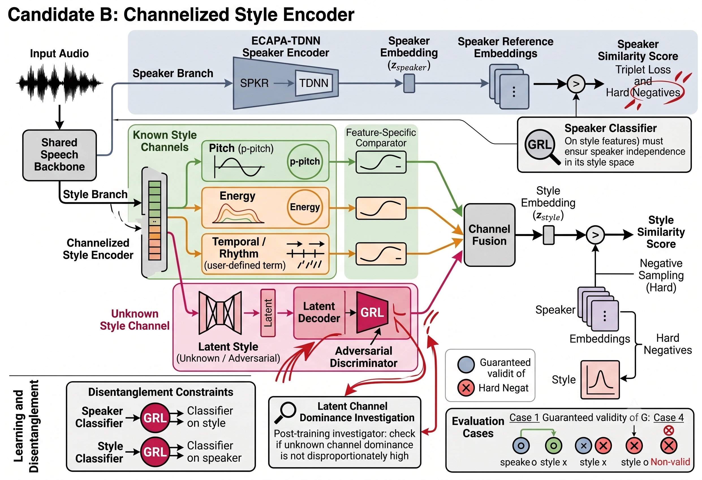

19. Direction Finalize (2026.07.06)
| MeetingPaper 1Paper 2 |
Z. Last Meeting Summary
- 이미지 생성 분야의 Instruction Following 평가 방법 조사 결과 보고
- 이미지 생성 분야에서는 프롬프트를 하나의 문장으로만 보지 않고, 작은 조건들로 분해해서 평가함
- Emotional TTS에서 감정 조건을 다루는 방식 조사 결과 보고
- Emotion label 기반 제어 / VAD / EASV 기반 제어 / Emotion reference 기반 제어
- TODOs:
- 벤치마크 논문:
벤치마크 논문의 경우, 현재 제작할 메트릭 모델의 감정/스타일 임베딩에서 감정을 상대적으로 정의할 것인지 절대적으로 정의할 것인지에 대한 결정이 필요 (가능하면 오늘 중으로 결정되는 것 연구 기간상 안전)
- 기 결정사항: 벤치마크 자동 메트릭 모델 제작에 있어 화자와 스타일(혹은 감정)을 분리 모델링하는 방향
- 화자와 스타일(혹은 감정)에 대한 관계 설정을, 스타일은 화자에 종속적인 것으로 보고 상대적 모델링을 하고자 함
- 그러나 벤치마크라는 특성 상 절대적 기준을 설립하는 것이 더 공평할 수 있기에 다른 선행 연구들의 전제를 확인하여 추가 논의하기로 함
- 화자 일관적 TTS 논문:
Continual Mechanism을 Voice Design 태스크에도 활용함으로써 Speacker Consistent한 TTS 모델을 설계하는 논문의 경우, 현재 Two-stage 모델과의 외적 매커니즘 유사성에 대한 문제 해결이 필요
- 기 결정사항: Fixed Reference Content Prompt를 사용하여 어쿠스틱 공간에서의 쿼리를 Voice Prompt에 대해 고정함으로써 조건부 확률 모델링을 수정하는 방식을 제시하기로 함
- 문제 상황: Fixed prompt로 generation을 한번 한다는 것이 겉으로 보기에 Two-stage와 동일해 보임
- 해결 방안: Instruction Following에 대한 지적
- 벤치마크 논문:
A. 감정/스타일 임베딩의 절대성과 상대성
A.1. 논문별 요약
EmoCtrl-TTS (Microsoft, ICASSP 2025)
- 감정 제어 가능한 Zero-shot TTS
- Speaker prompt, NV prompt, Emotion prompt를 별도로 분리하여 conditioning
- Speaker encoder/Emotion encoder 독립 존재 & 화자 특성과 감정을 서로 다른 임베딩으로 처리
- Valence/Arousal 값으로 감정을 연속적으로 표현하며, 화자와 감정이 독립적으로 제어 가능하다는 것을 전제로 설계
EmoSphere++ (Korea University, IEEE)
- Valence-Arousal-Dominance(VAD) 3차원 공간에서 감정을 구 좌표로 변환하는 Emotion-Adaptive Spherical Vector(EASV)를 제안
- Speaker encoder와 Emotion encoder가 완전히 분리된 구조
- 멀티 스피커 환경에서도 감정과 화자를 독립적으로 모델링하는 것이 가능하다고 주장
- 단, 동일 데이터셋 내에서의 평가이므로 speaker-specific 감정 분포의 문제는 직접적으로 다루지 않음
UDDETTS (USTC, Preprint 2025)
- LLM 기반 TTS로 이산적(discrete) 감정 레이블과 연속적(ADV) 감정 공간을 통합
- 핵심 주장은 감정이 이산 카테고리가 아닌 연속 공간에 분포한다는 것
- ADV 공간을 통해 감정을 해석 가능하게 disentangle
- 화자 조건과 감정 조건을 따로 다루되, 감정 공간 자체는 speaker-agnostic하게 설계
LESR (Hithink RoyalFlush, ICASSP 2025)
- 해당 논의에 핵심 관련 논문
- Speaker Verification에서 감정 변화가 화자 인식 성능을 저하시킨다는 문제를 직접적으로 다룸.
- 동일 화자의 다른 감정 발화 쌍을 CopyPaste로 augment하여 감정 변화에 무관한 speaker representation을 학습하는 방법을 제안
- 이 논문 자체가 “감정이 달라지면 speaker embedding이 흔들린다”는 사실을 인정하고 그걸 해결하는 것을 목표로 함
- 동일 화자에 대해 감정별(Angry/Positive/Neutral/Sad) cross-emotion test trial을 구성하여 평가
ECE-TTS (BUCEA, Applied Sciences 2025)
- F5-TTS 기반의 감정 제어 TTS. LESR의 EASV를 활용하여 VAD 값을 감정 표현에 사용
- Speaker similarity와 감정 제어를 동시에 측정하는 평가 지표를 사용
- speaker와 emotion을 분리하여 제어하는 것이 목표
- 다만 “speaker-dependent emotion range” 문제는 명시적으로 다루지 않음.
EmoSpeechAuth (Wroclaw, Interspeech 2025)
- 가장 직접적으로 관련된 논문
- Speaker Verification에 감정 임베딩을 추가하면 EER이 개선된다는 것을 보임
- ECAPA-TDNN + emotion2vec를 cross-attention으로 fusion하여 emotional speaker embedding을 만듦
- 감정 정보가 speaker identity 판단에 도움이 된다는 방향으로 설계
⇒ 화자와 감정이 완전히 독립적이지 않다는 것을 구조적으로 전제
A.2. 절대적 감정 임베딩 vs. 상대적 감정 임베딩
절대적 감정 임베딩의 핵심
⇒ “VAD/VA 연구에서는 화자 없이 감정만 비교하는 연구가 이미 있는데, 왜 분리 불가능하다고 보는가?”
| 절대적 감정 임베딩 | 상대적 감정 임베딩 | |
|---|---|---|
| 핵심 | Speaker와 Style은 독립적으로 존재 가능 절대적 감정 임베딩 인식 기준이 필요 | Speaker와 Style은 독립적으로 정의될 수 없음 Style은 Speaker 조건 하에서만 성립 |
| 근거 | VAD 연구들이 화자 무관 감정 측정을 수행 | 화자마다 감정의 표현 범위가 달라 절대적 감정 임베딩 비교가 불가능 |
절대적 감정 임베딩 지지 논문 → EmoCtrl-TTS, EmoSphere++, UDDETTS, ECE-TTS
상대적 감정 임베딩 지지 논문 → LESR, EmoSpeechAuth
A.3. 핵심 쟁점 정리
두 주장이 사실 다른 레이어의 문제를 얘기하고 있을 지도 모름
절대적 감정 임베딩
- 감정 인식 모델의 시각에서 문제를 바라봄
- VAD 공간은 화자와 무관하게 감정 유형을 정의
- 실제로 EmoCtrl-TTS 같은 연구들이 이걸 사용
⇒ 절대적 감정 임베딩 좌표가 존재하며, 그걸 측정할 수 있음
상대적 감정 임베딩
- gen-gen 측정의 유효성의 시각에서 문제를 바라봄
- IF “Angry” VAD 가 화자 A에게는 극도로 흥분된 상태를 의미 / 화자 B에게는 약간 날선 상태를 의미 THEN 생성 음성의 VAD 유사도가 높다고 해서 “스타일이 일관적”이라고 말할 수 있는가?
⇒ 측정값의 해석 가능성은 화자 동일성을 전제하지 않으면 모호해짐
절대적 VAD 좌표로 감정을 자체를 정의하고 측정하는 것 자체는 가능
BUT,
“스타일 일관성을 측정할 때 화자가 다른 음성의 VAD 유사도가 높다는 것이 의미 있는 지표인가?”
는 별개의 질문
WHY?
화자 A가 “슬픔 VAD = 0.2”로 발화한 것과 화자 B가 동일한 VAD 값으로 발화한 것이 같은 스타일이라고 할 수 있는지는 그 VAD 값이 각 화자에서 어떤 위치인지에 따라 달라지기 때문

{kind=link}
⇒ 동일한 VAD 값이 화자마다 다른 결과를 낳는다면, VAD 유사도로 스타일 일치성을 측정하는 것은 화자 간 비교에서 의미를 잃음
WARNING!
다 좋은데 상대적 감정을 어떻게 그럼 모델링할거냐…
⇒ 화자별로 특징 공간을 분리 모델링하고, 화자별 스타일 특징 공간에 대한 이해가 있도록 해야 하며, unseen speaker에 대해서도 zero-shot 전이가 가능함을 보일 수 있는 설계로 진행해야 함!
A.4. 구현하고자 하는 형태
Evaluation Cases
메트릭 모델에서 스타일은 화자에 대한 종속 모델링으로 진행
{kind=link}
- 메트릭 모델이 보증하는 케이스:
Case 1. speaker o / style o Case 2. speaker o / style x Case 3. speaker x / style x
- 메트릭 모델이 보증하지 않는 케이스:
Case 4. speaker x / style o
Candidate Design
- Candidate A. Shared Backbone + Two Heads
- 예시 그림:

- 구조:
audio ↓ shared speech backbone ↓ ┌────────────────────┐ speaker head style head ↓ ↓ z_speaker z_style
- 장점:
- speaker / style을 같은 입력에서 분리하는 구조를 논의하기 쉬움
- GRL이나 leakage control을 붙이기 쉬우므로 학습을 통한 두 특성 분리에 이론적 주장이 쉬움
- 위험:
- backbone이 실제로 style까지 충분히 담는지 검증 필요
- 두 embedding이 어떻게 분리되는지 명확한 학습 signal이 필요
- 예시 그림:
- Candidate B. Channelized Style Encoder
- 그림:

- 구조:
audio ↓ shared speech backbone ↓ ┌────────────────────┐ speaker head style head ↓ ↓ ... known style channels - pitch - energy - temporal / rhythm ... + - unknown style channel ↓ channel fusion ↓ ↓ z_speaker z_style
- 장점:
- 중간 channel이 있어 설명 가능성이 높음
- Disentangled Representation Learning
- Multi-branch Ensemble Metric Learning
- Deep Supervision
- 감정과 스타일의 애매한 정의 상태에서의 나름 괜찮은 합의
- 감정의 개수를 정의하지 않을 수 있음
- 중간 channel이 있어 설명 가능성이 높음
- 위험:
- known feature만으로 style을 정의했다는 bias가 생길 수 있음
- 명시적 감정 레이블을 사용하지 않으므로 학습 난이도가 상당함
- unknown channel을 어떻게 학습/검증할지가 핵심
- 방안: unk channel의 dominance가 다른 채널에 비해 높지 않음을 학습 완료 후 수치로 조사하면 됨
- 그림:
{kind=link}
B. 단일 스타일 쿼리 TTS 방식의 Instruction Following 성능 한계 문제

B.1. 단일 쿼리 방식의 문제점
이 내용은 실제로 InstructTTSEval을 통해 평가를 진행해본 결과가 아닌 이론적으로 진행한 사고 실험
* InstructTTSEval은 Gemini API를 사용해야 해서 비용이 발생하므로 확실한 방향성 결정 이후 진행 예정
현 시점 달성 성능
- 지난 미팅:
COS WER UTMOS Baseline 0.224 0.120 3.406 KV 캐시 재사용 0.402 0.123 3.489 KV 캐시 항상 재생성 0.269 0.122 3.461
- 현재:
COS WER UTMOS 화자 쿼리 시 시드 고정 0.369** 0.121 3.512 * 이미지 생성처럼 시드 바꾸면 같은 Voice Prompt로 다른 음성 생성 가능
** Flash Attention 영향
Two-stage Pipeline과의 명시적 기여 분리 방안
- Two-stage 모델의 경우 Voice Design 후 Voice Cloning인데 이 경우, 화자 특성에 대한 쿼리가 단일 시점에 결정되므로 Voice Design 시 입력한 Content Prompt가 충분히 화자의 특성을 다 담지 못할 경우 Voice Cloning으로 넘어갈 때 병목으로 작동함
- Voice Cloning으로 넘어가면 모델이 분리된 것이므로 처음에 입력된 Voice Prompt에 완전히 접근이 막히게 되는데, 중간 reference 오디오가 Voice Prompt의 내용과 디렉션을 충분히 담고 있을 것이라는 보장이 없음
- 예: [엄청나게 디테일하고 복잡한 화자 서술] + [안녕하세요] ⇒ 안녕하세요 만으로는 화자 모델링 불가능
⇒ 그렇다면, Two-stage 방식과 대비하여 하나의 모델을 사용했을 때 가장 큰 차이점은 Instruction Following 가능성이라고 볼 수 있음
* 그 외에도 Two-stage의 경우 모델이 별도로 2개 존재하므로 출력이 모델의 VD RVQ 디코더→VC RVQ 인코더를 통과하면서 손상이 발생하므로 구조적으로 차이가 있긴 함
⇒⇒ 그런데 문제는 지금 우리 방식인 Fixed Reference Content Prompt 방식의 경우 모든 경우에 대해 고정된 전역 쿼리를 사용하는 것이므로 역시나 Instruction Following 문제가 발생한다고 볼 수 있음
B.2. Leanable Global Query
Initial Approach
- 고정된 쿼리용 프롬프트를 사용하는 것이 Instruction Following 병목을 일으킬 것이라는 생각의 근거는 해당 쿼리가 Voice Prompt에 대해서 최적이 아닐 수 있음과 동시에 사람이 임의로 그 값을 결정했기 때문
- 그렇다면 학습을 통해 Dataset optimal한 Global Query를 구하는 방식으로 하면 Two-stage와 달리 학습되는 부분도 있으니 차별점을 가질 수 있을 것이라 판단
- 그래서 다시 꺼내온 Prefix-tuning

- 그러나 학습 결과 WER 하락 문제가 다시 발생
- ⇒ 애초에 Un-seen 도메인의 임베딩(latent)을 삽입하는 것이 모델에게 문제를 일으키는 것으로 추정
- 1월달에 시도하던 기존 메서드도 그럼 그런 문제일 수도
Fine-grained Approaches
- 다이렉트로 토큰 입력이 아닌 인코더를 한번 통과 시키는 형태로 구현
- 해보려 했으나 애초에 CELoss로 로스가 전파가 안되는 상황
- 여기서 신재는 강화학습을 사용해서 해결하려 하였는데, 강화학습이 논문에 나오는 것이 좋은 상황인지 판단이 필요
- 해보려 했으나 애초에 CELoss로 로스가 전파가 안되는 상황
- 흥미로운 소식으로
- 클로드의 분석으로는 읽을 수 있는 토큰인 경우 COS 지표를 올리면서 WER 수치 손상을 막을 수 있다고 실험을 리포트
- Read-aloud 방식: Voice Prompt를 다시 한번 읽도록 하는 Ref Content Prompt를 입력하여 자신의 스타일을 읽는 오디오 레퍼런스를 삽입하면 COS 지표가 0.4대로 상승
B.3. Leanable Per-speaker Query
Token-level Discrete Diffusion (그냥 아이디어, 비현실적)
- Voice Prompt를 Fixed Reference Content Prompt로 전이하는 상태 전이 수행
Reference Content Prompt Generation Model

- LSTM 등 별도의 모델을 사용하여 프롬프트를 Generation
Self-Generation
- 별도 모델 없이 Fixed Reference Content Prompt 자체도 AR로 모델이 자체 생성
- 하려고 보았으나, Qwen3TTS에는 영어 토큰 임베딩이 없었따…..
F. Feedbacks